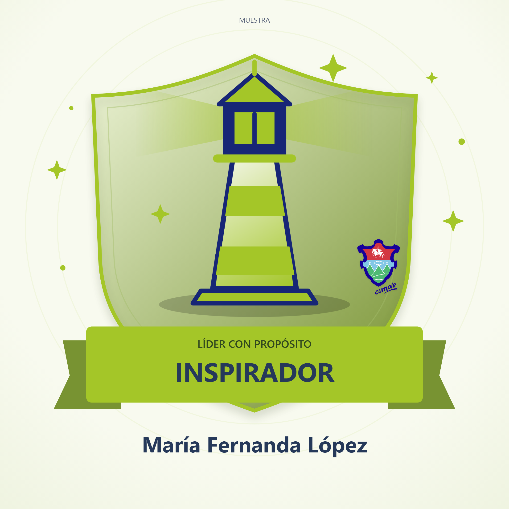
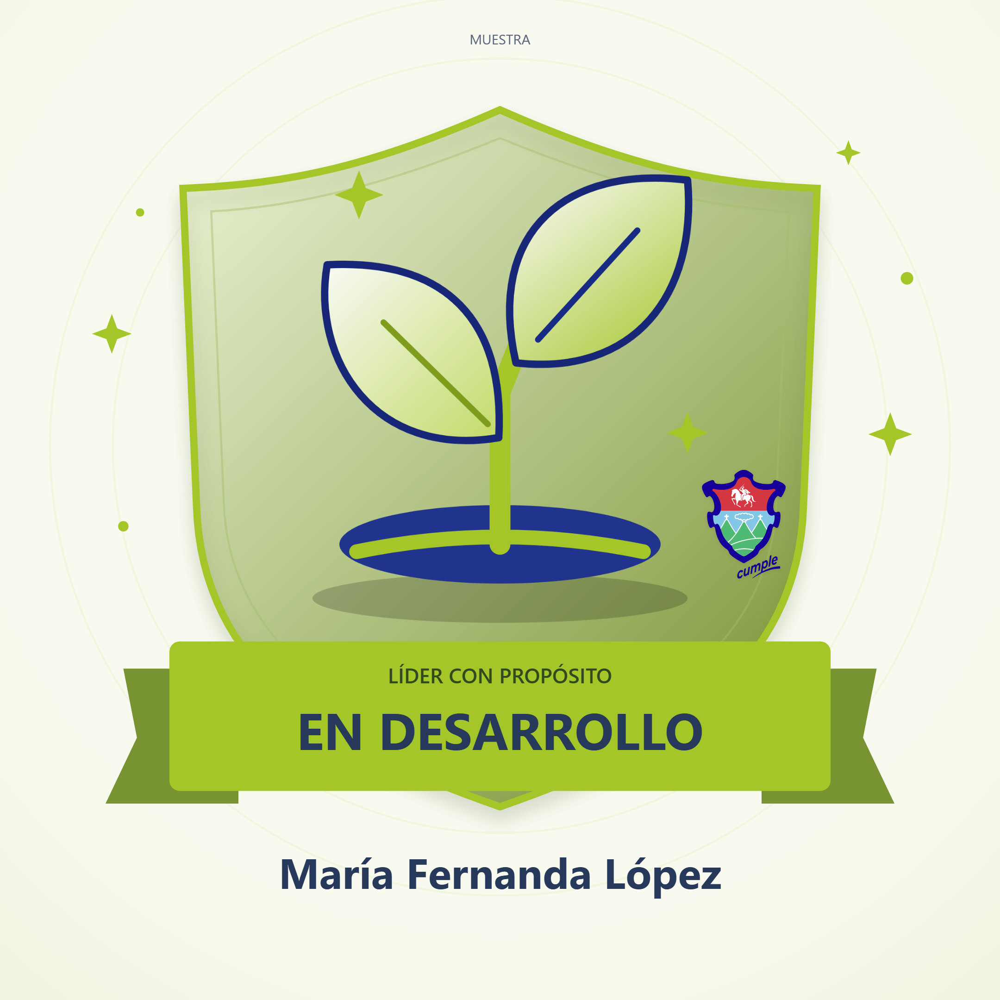
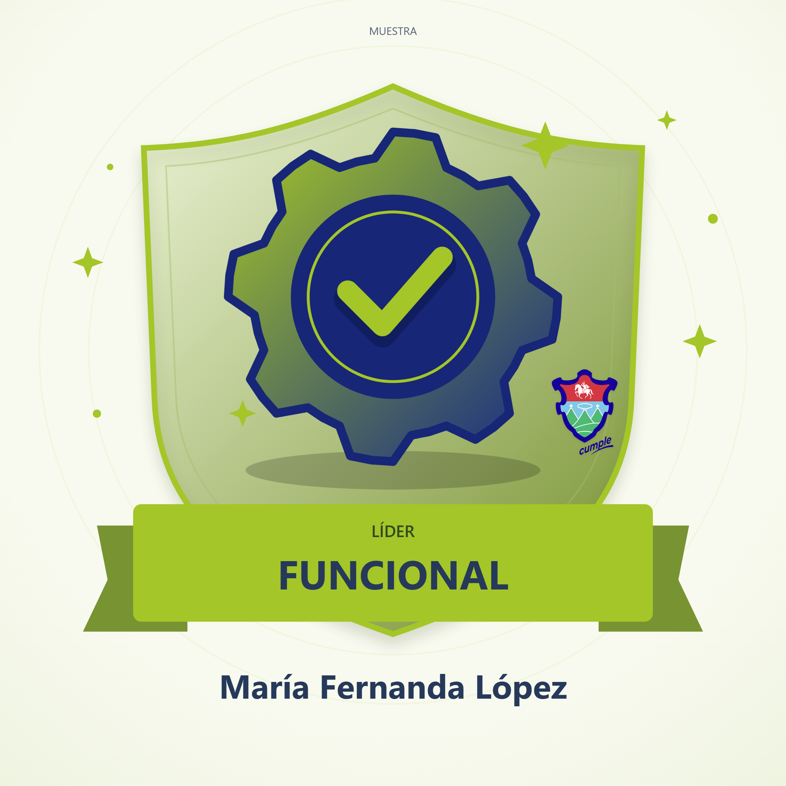
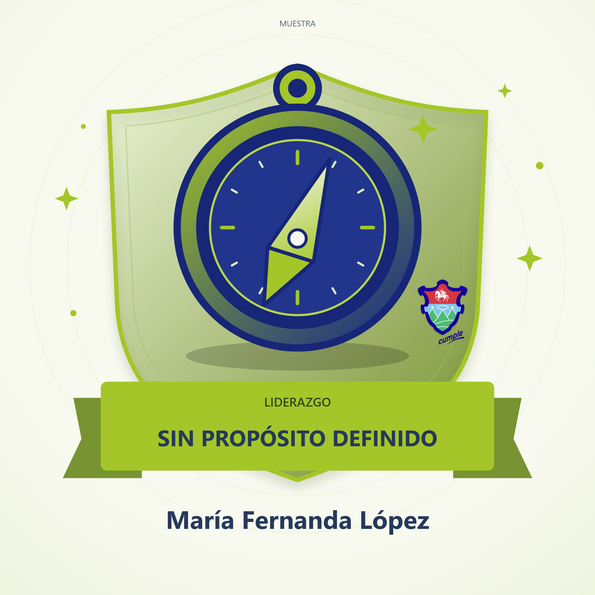

Líder con propósito inspirador
42–50 PUNTOSTu liderazgo está guiado por valores claros y un sentido profundo de contribución.
Ver resultado en la app ↗Así se verá cada insignia, con el nombre de quien complete la evaluación. Estas imágenes son muestras y no registran respuestas.

Tu liderazgo está guiado por valores claros y un sentido profundo de contribución.
Ver resultado en la app ↗
Tienes una buena base, pero puedes fortalecer tu coherencia y comunicación del propósito.
Ver resultado en la app ↗
Cumples tu rol, pero tu propósito no siempre está presente en tus decisiones.
Ver resultado en la app ↗
Es momento de reflexionar sobre el sentido y la dirección de tu liderazgo.
Ver resultado en la app ↗